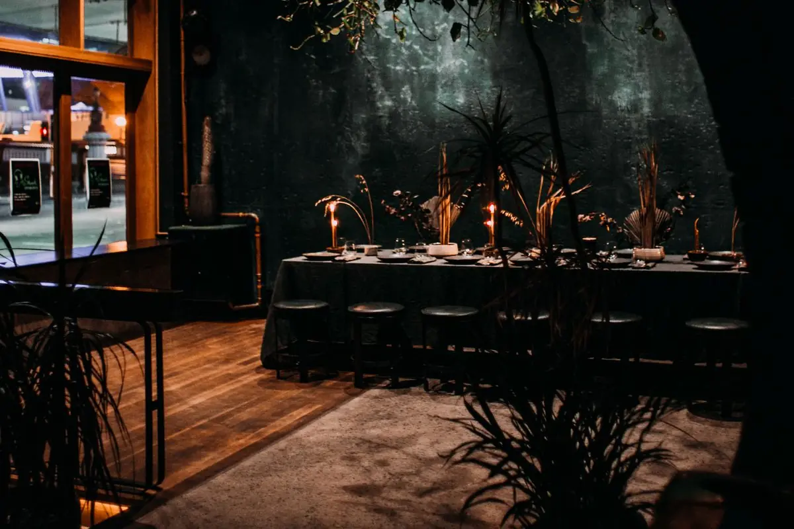

Le Pont des Saveurs
Yassa, thieboudienne, attiéké : l’Afrique de l’Ouest dans votre assiette.
Une rencontre à Brazzaville entre cuisines sénégalaise, ivoirienne et congolaise.

La carte
Trois pays, neuf idées de plats à partager. Les descriptions et les prix en FCFA sont fictifs, pour cette démonstration.
Sénégal
-
Yassa poulet
Poulet mariné au citron, oignons fondants et riz blanc.
4 500 FCFA
-
Thieboudienne
Riz à la tomate, poisson et légumes mijotés.
5 500 FCFA
-
Mafé
Bœuf mijoté dans une sauce à l’arachide, servi avec du riz.
5 000 FCFA
Côte d’Ivoire
-
Attiéké poisson braisé
Semoule de manioc, poisson braisé et garniture de tomates et d’oignons.
5 000 FCFA
-
Kédjenou de poulet
Poulet mijoté à l’étouffée avec tomates, aubergines et épices.
4 500 FCFA
-
Alloco
Bananes plantains mûres frites, accompagnées d’une sauce tomate pimentée.
2 000 FCFA
Congo
-
Poulet moambé
Poulet mijoté dans une sauce à la pulpe de noix de palme, servi avec du riz.
5 000 FCFA
-
Saka-saka
Feuilles de manioc pilées et mijotées, accompagnées de chikwangue.
3 500 FCFA
-
Liboke de poisson
Poisson aux aromates cuit en papillote de feuilles, servi avec du manioc.
5 500 FCFA
À propos
Le Pont des Saveurs imagine une table à Brazzaville réunissant les cuisines du Sénégal, de Côte d’Ivoire et du Congo.
Le « pont » symbolise la rencontre de ces trois traditions culinaires autour d’une même table.
Ce projet de portfolio est créé par Adriano Bosso, étudiant en Systèmes d’Information et Génie Logiciel, pour présenter son travail de création de sites web pour restaurants.
Infos pratiques
Adresse
Le Pont des Saveurs12, rue des Saveurs
Brazzaville, République du Congo
Horaires
| Jour | Horaires |
|---|---|
| Lundi | Fermé |
| Mardi | – |
| Mercredi | – |
| Jeudi | – |
| Vendredi | – |
| Samedi | – |
| Dimanche | – |
Le quartier, à titre indicatif
Emplacement indicatif : quartier du Plateau, au centre de Brazzaville. La carte ne localise pas un restaurant réel.
Contact
Numéro volontairement invalide : +000000000000. Ces liens illustrent le parcours de contact ; ils ne permettent ni appel ni échange WhatsApp.